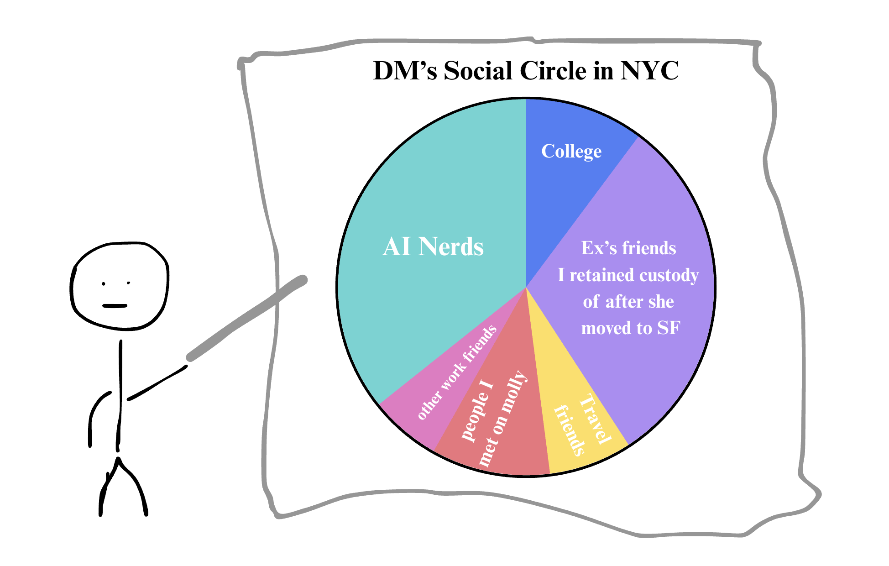

A strange pattern emerges when I look at my friends in New York city. Almost all of them moved to the city within a year of when I did. Pandemics, new jobs, breakups. We became friends because we were all open to it.
Once you’ve been in a place long enough, odds are you’ve found your tribe. Yep, that was a fun conversation. No, I don’t wanna grab coffee or exchange QR codes on LinkedIn. No it’s not you.
The solution? Go where the other freshmen are.
This post is for all my friends that moved to a new place and are trying to find the community.

Go where the other freshmen are
The year I moved - I forced myself to go to at least one public event per week.
Most people hate public events for a few reasons:
- You’re too cool for that. Your whole life it just happened to you, and now you have to do it on purpose.
- These events suck. The bigger and more open they are - the more annoying they get.
David Chapman argues that subcultures follow a predictable death cycle. A small group of interesting people show up and build something cool. Casuals flood in to enjoy it without contributing. Sociopaths show up to extract money, status, and clout. The geeks burn out, the cool gets diluted, and everything collapses.
Public events follow a similar lifecycle.
They start with a small dense community of like-minded people, inviting their friends. As the event spreads, more newbies show up. New folks show up that are explicitly trying to sell something or climb up some ladder. The likeable and interesting people eventually break off and start subgroups. In the end - the event coalesces into newbies (you), losers (people that don’t get invited to the private events), and sociopaths (people trying to sell you something or get your LinkedIn handle).
You’re looking for the other noobs.
Party like a capitalist
Social capital (much like regular capital) is distributed unevenly.
Think about the existence of super-connectors - the friends that seem to be out 7 days a week and have 100 people at their birthday.
Everyone wants to go to parties. Go on vacations. Nobody wants to do the work of hosting events or coordinating people. 20% of people organize 80% of the events.
The solution - embrace the fact that social networks aren’t perfectly distributed and start inviting people to things. Push to be more extroverted than you’re comfortable with.
Cross-pollinate your fellas
Networking is a positive sum game. Introduce friends to friends. If they hook up or start hanging out separately - you earn a dividend.
Passive income baby.
Footnotes
1. Dating apps get worse over time for a similar reason. The best person you can meet is someone that just got on the apps. The longer an app exists, the more it becomes a lemon market of people that didn’t get paired off for a reason. ↩
2. Like regular capital, social capital also tends to self-perpetuate. Once you have an abundance of it making new connections is effortless. Starting from 0 is 10x harder than starting from 1. ↩